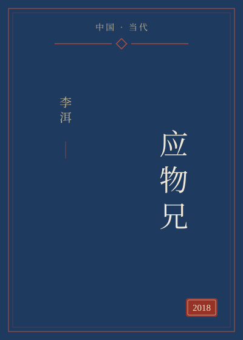
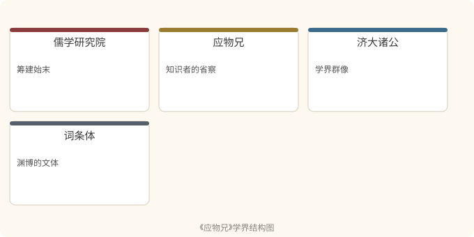

应物兄
一、基本信息
| 作者 | 李洱 |
|---|---|
| 成书/出版 | 第十届茅盾文学奖获奖作品（中国作家网专题 C020；出版具体日期待核） 第十届茅盾文学奖专题（中国作家网）（官方文学机构） |
| 国别/地区 | 中国 |
| 时代 | 现当代 · 当代 |
| 体裁 | 长篇小说 |
| 语言 | 汉语（白话） |

《应物兄》学界结构图（主题·结构图）
二、创作背景
中国作家网专题（C020）授奖词：'庞杂、繁复、渊博，形成了传统与现代、生活与知识、经验与思想、理性与抒情、严肃与欢闹相激荡的独特的小说景观'；'李洱对知识者精神状况的省察，体现着深切的家国情怀'。
题材：济州大学筹建儒学研究院，'应物兄'与学界众生（通说待核）。
三、内容脉络
应物兄（本名应物）主持'儒学研究院'筹备——学界百态（通说待核）。
济哥、仁德丸子等谐音梗与知识词条体（通说待核）。
四、主要人物表
| 人物 | 身份 | 说明 |
|---|---|---|
| 应物兄 | 教授 | 叙述核心（通说待核） |
| 济大诸公 | 学界群像 | （通说待核） |
五、主题与艺术特点
- 知识者的自嘲与自省（C020：'对知识者精神状况的省察'）。
- 词条式小说文体（通说待核）。
- 儒学传统的当代命运（C020：'对中国优秀文化传统的认同和礼敬'）。
六、影响与评论
- 中国作家网：第十届茅盾文学奖获奖作品；授奖词（C020）。
第十届茅盾文学奖专题（中国作家网）（官方文学机构） - 中国作家网官方名单：第十届（2015—2018）获奖作品（C012）。
历届茅盾文学奖获奖作品一览（中国作家网）（官方文学机构）
七、阅读建议
难点
- 体量（80余万字说——通说待核）。
- 学术圈内讽与知识密度。
- 《应物兄》（人民文学出版社，通说待核）。
对照《围城》：知识分子小说两代。
八、待核实
- 应物兄本名（应物）与济州大学设定核对。
- 2018年12月人民文学出版社初版核对。
- 《花腔》与《石榴树上结樱桃》信息待核。
本页主要来源
李洱的其他收录作品：应物兄